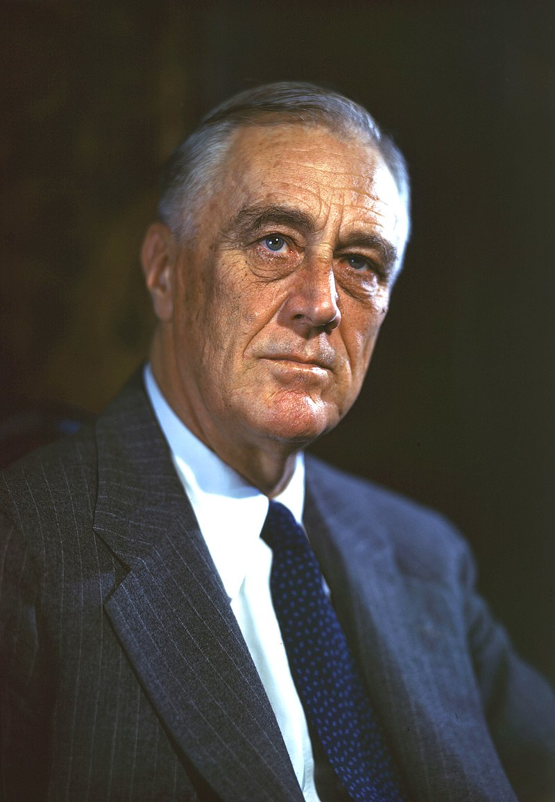

Tribute To Franklin D. Roosevelt
32nd president of the United States

President Roosevelt getting his photo taken
A look into Roosevelt's history
- Born on January 30, 1882
- Graduated from Groton School and Harvard
- Elected to the New York Senate in 1910
- Aided Assistant Secretary of the Navy under Woodrow Wilson during WW1
- His legs became paralyzed in 1921
- Became governer of New York in 1928 to 1933
- Became president in 1932 during the Great Depression
- Instituted the New Deal to help people recover from the Great Depression
- Provided programs to farmers and unemployed people, the National Recovery Administration
- Put reforms related with finance, communications and labor which lasted until the end of the prohibition
- Reelected in 1936 tried to release the judicial procedures reform bill which would add more justices which was not passed
- won election a third time being the only president to serve more than 2 terms in 1940
- Supported China, the United Kingdom, and the Soviet Union
- After the Pearl Harbor attack on December 7th 1941 Roosevelt declared war on Japan then on Germany and Italy a few days later
- Mobolized the U.S. economy for the war effort and made a strategy in which to prioritize Germany's defeat
- Was reelected in 1944 but died in April 1945